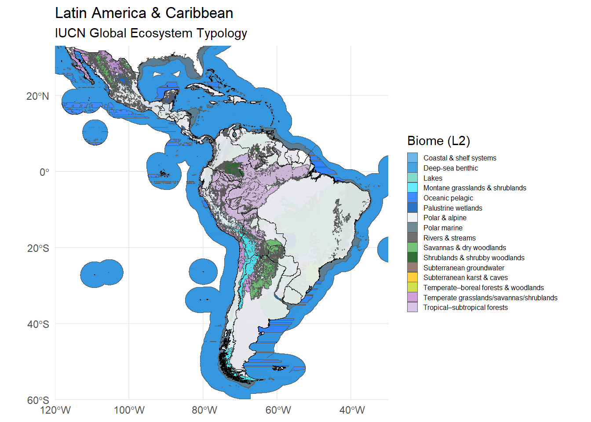
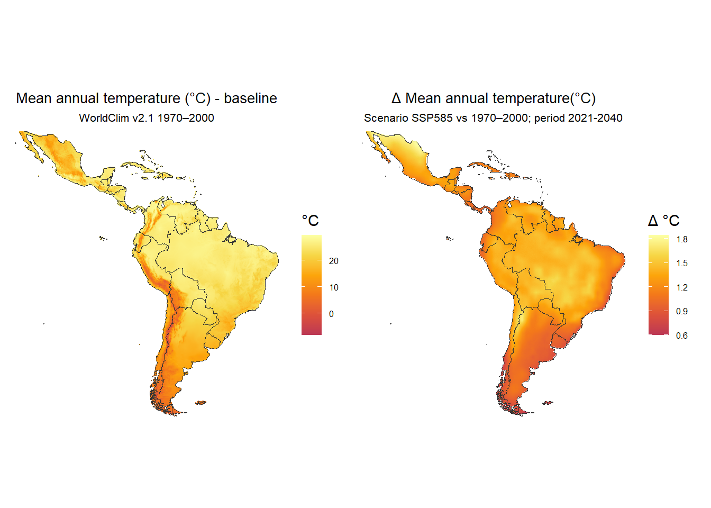
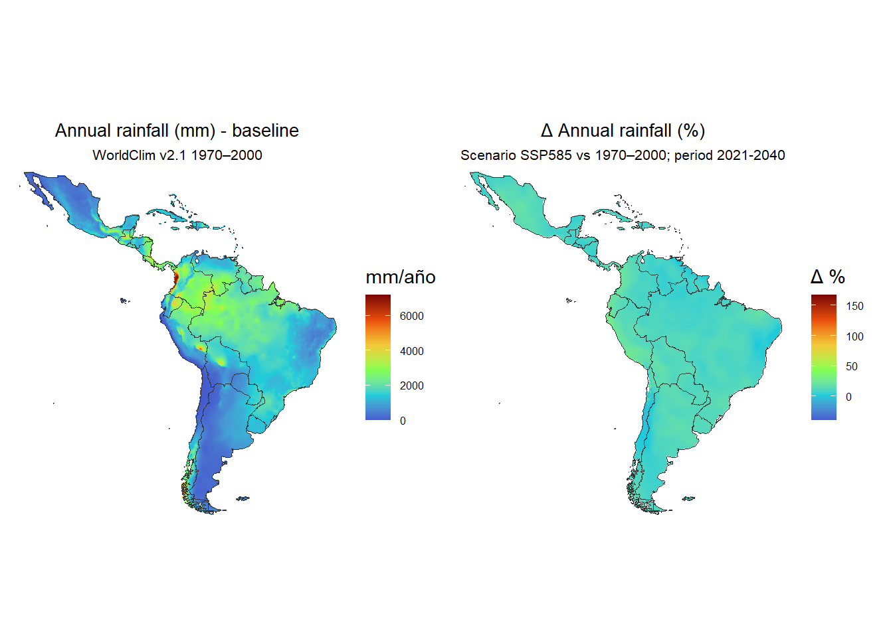
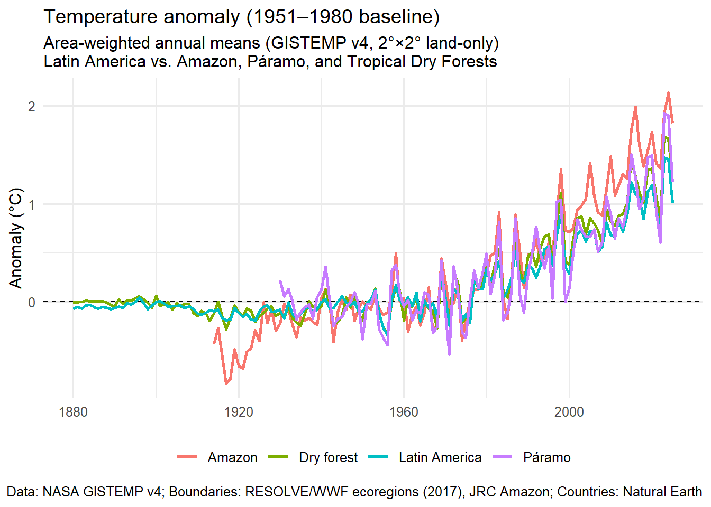

Climate change impacts in Latin America
Introduction
Climate change in Latin America
Taking the Sixth Assessment Report by the IPCC (Lee et al. 2023) as an starting point, we look into the development and forecasts of climate change for Latin America and the Caribbean. This chapter explore the impacts of climate change over mammals from Latin America and the Caribbean region. This part of the world is a intricate natural geographic span with a complex ecological and political structure. To be specific describing the region, we adhere to the United Nations M49 standard (United Nations and United Nations 1999) developed to facilitate the consolidation of national statistical data to regional levels. According to M49 standard Latin America is a region formed by three subregions: Caribbean (28 islands, spanning 15 countries), Central America (8 countries), and South America (16 countries). This regions extends over 20,139,378 km2 of land. This territory is a little more than 13% of world emerged land. Moving into the see the reference to the Exclusive Economic Zone results in a total area of 140,776,000 km2 (almost 40% of ocean surface).
Ecologicaly, the region spans 16 biome types, according to the IUCN Global Ecosystem Typology [Keith et al. (2022); @keith2020]. This framework is comprehensive, and includes subterranean ecosystems. The map is ilustrative of them in the region, the legend accounts for all of them, but some may not be represented or overlap. Despite this representation limitations, the map gives a good account of the ecosystemic complexity of the region. (@fig-biomes)
Current state of climate change effects
Latin America is considered among the most climate-vulnerable regions (sharing risk with Africa, Small Island Developing States, South and Southeast Asia, Middle East and the Arctic), despite the relatively small contribution to global greenhouse gas emissions of all this regions.
The particular exposure of Latin America steam from a combination of structured factors. It is a region where climate hazards have a large probability to strike. This is a result of the geographical position. It spans the tropics, subtropics, and has an extensive coastlines, so it is exposed to hurricanes (Caribbean, Central America), El Niño/La Niña–driven droughts and floods (Pacific coast, Andes, Southern Cone), and heatwaves. Some sub-regions, like the tropical Andes, depend on glaciers as a source of water supply. There are ample sub-regions with low-lying coastal lands. River deltas, mangrove coastal forest and the Caribbean islands are clearly vulnerable to sea-level rise, storm surge and erosion.
The region is biodiversity rich. Five of the 17 megadiverse countries are located here: Brazil, Ecuador, Mexico, Peru and Venezuela. There are worldwide unique and fragile ecosystems located in the region. Some of them of global relevance: Amazon rainforets, Coral reefs, mangroves, páramo andino and tropical dry forest are widely recognized for its role in Holocene biosphere. The biocultural binding is strongly preserved in the region, making local livelihoods rely on these ecosystems for food, water, and raw materials.
But Latin America is also vulnerable because of socio-economic hardships. Inequity and poverty are widespread and pervasive, making difficult for people to cope with disasters. It is estimated that climate shocks push million into poverty or food insecurity. Cities grow through pattern of informality. This means that settlements are common to spread into floodplain, hillside or heat-prone territories. Related to all these, is the heavy economic and livelihood dependency on agriculture which makes food climate-dependent and spreads the human impact to wildlife and fisheries.
Therefore, Latin America an the Caribbean can be regarded to have a high physical exposure to climate change, has a global ecological importance. The human population in the region has economic dependence on climate-sensitive sectors, and social inequality provoke a state of “double vulnerability”: high sensibility to the impacts of climate change and limited adaptive capacity. A current state of perceived effects can be summarized as illustrated in Table 1. Expectations are that these effects will keep increasing.
In particular there is consensus that some tipping points could be near, if not already reached. For instance in the Amazon, if deforestation continues, large parts may shift to drier savanna-like systems, disrupting continental water cycles. Another wide consensus is that impacts are already visible and accelerating (heat, drought, floods, crop losses, zoonotic disease spread are increasing).
| Concept | Identified effect |
|---|---|
| Climate patterns | Average temperatures have risen; heatwaves are more frequent. Rainfall patterns are shifting: some areas are drier (more droughts), others have heavier rains. |
| Extreme events | Stronger and more frequent floods, droughts, wildfires, hurricanes, and intense storms. 2024 saw major hurricanes, floods, and droughts across the region. |
| Water resources | Andean glaciers are retreating rapidly, reducing dry-season water supply for drinking, irrigation, and hydropower. |
| Ecosystems | Amazon deforestation disrupts rainfall cycles and “flying rivers” (moisture flows). Coastal ecosystems (mangroves, reefs) suffer from sea-level rise and acidification. Species loss and species range shifts are already occurring. |
| Food security | Yields are falling in some crops due to heat and rainfall variability. Fisheries are stressed by ocean warming and acidification. Extreme events increase hunger risk in vulnerable populations. |
| Zoonosis | More mosquito-borne diseases (dengue, zika, chikungunya). Heatwaves raise mortality and stress health systems. Many areas lack infrastructure to cope with heat or disasters. |
The patterns of climate change in terms of average temperature and rainfall are shown in Figure 2 and Figure 3. The base line values were calculated for the period 1970-2000. A projection to near future labeled as “2030” was calculated using data for the period 2021-2040.


We are framing Latin America vulnerability to climate change using the IUCN ecosystem typology for climate action. In particular, IUCN has developed the Ecosystem Red List & Key Biodiversity Areas (KBA), which are tools that help the identification of ecosystems at risk of collapse and areas of high conservation value. This assessment has gathered evidence hr support the view that in Latin America an the Caribbean region particular attention should be directed to Amazon, mangroves, páramos, tropical dry forests and coral reefs. A consensus perspective is emerging suggesting that strong commitments are required to protect–restore–manage habitats, reduce direct climate hazards, and address indirect human–climate synergies (Table 2).
Direct vs Indirect Drivers of Mammal Biodiversity Threats under Climate Change | |||
|---|---|---|---|
Category | Terrestrial mammals – examples | Aquatic mammals – examples | Weight |
Temperature & heat stress | Heatwave mortality (bats, small mammals); reduced fecundity in carnivores/ungulates; den/roost overheating. | Cetacean thermoregulation stress; pup mortality in pinnipeds; range shifts to cooler waters. | ●●●●○ |
Hydroclimatic extremes (drought/flood) | Vegetation loss → prey decline; collapse of water refuges; increased wildfire exposure; altered migration. | Reduced river discharge (river dolphins/manatees); inundation of haul-outs; flash-flood stranding. | ●●●●● |
Sea-level rise & cyclonic storms | Coastal refuge loss; saline intrusion into lowland forests; displacement from deltas and estuaries. | Rookery/beach loss; storm-driven pup mortality; haul-out erosion. | ●●●○○ |
Ocean warming & acidification | — | Prey base decline & trophic mismatch; distribution shifts; altered foraging success. | ●●●●○ |
Disease dynamics | Distemper (canids/mustelids), hantavirus in rodents; heat-facilitated parasite burdens. | Morbillivirus & toxoplasmosis in dolphins; harmful algal blooms. | ●●●○○ |
Habitat loss & fragmentation | Drought/fire → forest conversion; corridor loss for jaguars/tapirs; urban sprawl intensifies heat & barriers. | Mangrove/wetland loss reduces manatee shelter; coastal development blocks haul-outs. | ●●●●● |
Prey-web shifts & trophic cascades | Vegetation/productivity changes reduce herbivore prey; cascading effects on carnivores; mesopredator release. | Fish stock collapse → dolphin/seal food scarcity; shifts concentrate whales near shipping lanes. | ●●●●○ |
Conflict & infrastructure | Drought → new dams/pipelines; roads expand with land-use change; retaliatory killing near farms. | Ports, seawalls, traffic disrupt movement; higher ship-strike & noise exposure as routes intensify. | ●●●○○ |
Legend — Row color: Direct (blue), Indirect (orange). | |||
Warning: attribute variables are assumed to be spatially constant throughout
all geometries
References
Keith, David A., José R. Ferrer-Paris, Emily Nicholson, Melanie J. Bishop, Beth A. Polidoro, Eva Ramirez-Llodra, Mark G. Tozer, et al. 2022. “A Function-Based Typology for Earth’s Ecosystems.” Nature 610 (7932): 513–18. https://doi.org/10.1038/s41586-022-05318-4.
Lee, Hoesung, Katherine Calvin, Dipak Dasgupta, Gerhard Krinmer, Aditi Mukherji, Peter Thorne, Christopher Trisos, Jose Romero, Paulina Aldunce, and Ko Barret. 2023. “Synthesis Report of the IPCC Sixth Assessment Report (AR6), Longer Report. IPCC.” https://mural.maynoothuniversity.ie/id/eprint/17733/.
United Nations, and United Nations, eds. 1999. Standard Country or Area Codes for Statistical Use: Current Information as at 31 August 1999 = Codes Standard Des Pays Et Des Zones à Usage Statistique. New York: United Nations.